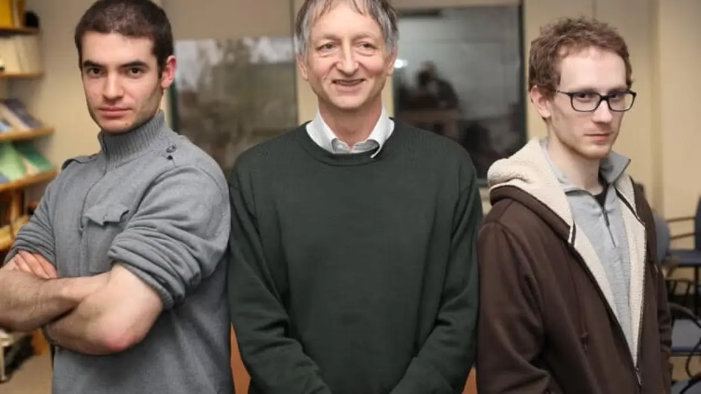
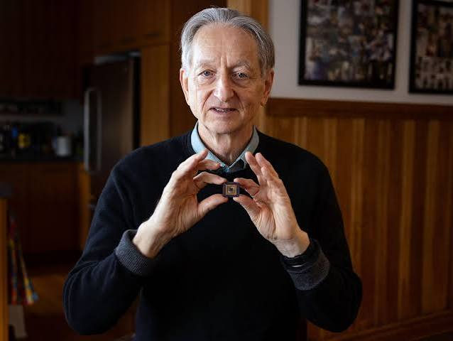

Welcome
Welcome 👋
Eight weeks, one idea at a time — and by the end you will have built something of your own. This is going to be a great learning journey, and an enjoyable one.
And look at who is in this room:
That mix is not a footnote. It is the most valuable thing we have — AI only gets interesting when you point it at something you care about.
How we work together
Be curious. Out loud. 🙋
- I will ask you to guess before I explain. Being wrong is not a problem — it is the fastest way to remember the right answer.
- Interrupt. Unmute, or drop it in chat. You do not need to wait for the end.
There is no such thing as a dumb question.
The question you feel shy about is usually the one five other people are also stuck on. Ask it — you will be doing them a favour.
The plan
How this course works
- 8 weeks: history → how AI works → using it → building → agents → ethics + capstone
- Every slide deck lives on the course site — revisit anytime
- Weekly rhythm: recap → 🥚 easter egg → deep dive → exercise → quote
Week 1
History & Foundations of AI
From a thought experiment to the chatbot in your pocket
🥚 The easter egg game
Every week I hide a question. The answer is buried somewhere in that week's material.
Collect the first letter of each week's answer. By Week 8 they spell something.
Bring your answer to the next class. Winners get bragging rights — and a small prize.
🥚 This week's easter egg
A 2017 research paper kicked off the entire ChatGPT era.
Its title sounds like a famous Beatles song. 🎵
What is the paper's title?
The answer is hiding in today's material. Bring it next week — and save its first letter.
Deep dive
A giraffe is born 🦒

Within one hour it stands. Within a day it can run — and it already knows which adult is its mother.
An Olive Ridley hatches 🐢

It digs out of the sand in the dark, and crawls straight towards the sea — which it has never seen.
Nobody taught them. So how do they know?
Ten seconds. What is your answer?
Now think about a human baby 👶
Two completely different routes to knowing something. Remember both — the whole history of AI is these two ideas fighting.
So — could a machine do either of these?
Be born knowing? Or learn from experience? What do you think?
Someone asked exactly this question — seriously — long before there was a computer worth the name.
How old is the field of AI?
Younger than the internet? Older than your grandparents? Write down a year.
So — what was that? 🕵️
That game has a name. It is called the Turing test.
You just played it. And the class scored close to chance.
How old is this idea?
Not the chatbot — the idea that you could test a machine this way. Write down a year.
1950
Alan Turing asks "Can machines think?" — and proposes exactly the game you just played.
Seventy-five years ago. Before transistors, before screens, before anyone had written a line of software.
1956 — AI gets its name
The Dartmouth workshop: a summer project to make machines "use language, form abstractions, and improve themselves."
They estimated significant progress in… 2 months. It took 60+ years. (click to reveal)
1960s–80s — intelligence as rules
This was called symbolic AI, or expert systems. For twenty years it was what "AI" meant.
Rules you already trust every day ✅


Both are pure rules. Both work perfectly — and both are AI by 1950s standards. Neither has ever learned anything.
How an expert system actually works ⚙️
Two that genuinely worked 🏥💻
So why did it stall? 🚦
Red light → stop. Cow sitting on the road → go around. Auto cutting in from the left → brake. Wedding procession across the junction → …?
You never finish the list. The road always invents one more case.
And the deeper problem: experts cannot write down what they know. Can you write the exact rules for recognising your mother's face?
The AI winters ❄️
1990s–2000s — flip the approach
Where rules gave up: Kinect 🎮

Nobody can write the rule for "where is an elbow?". Microsoft trained it on a million example images instead — and it guesses, with a probability.
Two of the three circles 🔵🟢
All machine learning is AI. Not all AI is machine learning — the calculator and the expert systems live in the outer ring.
Deep dive
A farmer asks you a question 🌾
"I am putting 40 kg of fertiliser on my field this year.
How much will I harvest?"
You have never farmed. You have no formula. What do you do?
No rule. But we have examples 📊
This is training data. Not rules — just things that already happened.
Step 1 — guess a line 📏
One number, w, defines the whole line: yield = w × fertiliser. That number is a weight.
Step 2 — add up the wrongness: loss
Lower loss = better model. Our job is now simple: find the w that makes this number small.
Step 3 — try different weights 📉
Finding the weight with the lowest loss — that is TRAINING. Nothing more mysterious than that.
Training is finished. This is the model 🧠
A model is just the numbers you kept after training. One here. About a trillion in GPT-4. Same thing.
Now answer the farmer: inference
Using a trained model on something new is INFERENCE. Training happens once. Inference happens every time anyone asks.
But one line cannot explain this 🌧️
One weight gave us one line. The world needs two dimensions — so the model gets two weights instead of one: w₁ for fertiliser, w₂ for rainfall.
Two things matter, not one → a tiny matrix 🔢
Multiply inputs by weights, add up. That is matrix multiplication — and it is essentially all a neural network does.
Three words you now own 🗝️
Every AI system in this course — including ChatGPT — is these three things at enormous scale.
How does a machine actually "learn"? 🎲
1959. Arthur Samuel at IBM writes a program that plays checkers (draughts). Within a few years it beats him — its own creator.
He coined the term for what it did: machine learning.
But what does the program actually do? Three questions: what does it see, what does it store, and what makes it improve?
Checkers, if you've never played it ♟️
You already know this game: Puli Meka 🐅🐐
1. What it sees, 2. what it stores
3. The score sheet — and the weights
How the weights improve: play, compare, adjust
Two different activities: training vs inference
When you chat with ChatGPT you are doing inference. It is not learning from you.
Two ways to beat a human at a game ⚔️
Both can beat you. Only one of them improves. The next two slides are one of each.
1997 — Deep Blue beats Kasparov ♟️
IBM's machine defeats the world chess champion. Front-page news everywhere.
- But it won mostly by brute force: 200 million positions examined per second
- Its scoring rules were hand-tuned by human grandmasters — closer to the rulebook era than to learning
- Chess is big, but small enough to search. What about a game that isn't?
2016 — AlphaGo beats Lee Sedol 🔴⚪
Go has more legal board positions than there are atoms in the universe. Brute force is impossible — you cannot search your way out.
- AlphaGo learned: deep learning + Samuel's self-play trick, at enormous scale
- Game 2, move 37: a move no human would ever play. Commentators called it a mistake. It won the game.
First, someone had to build the exam 📸
2006–09: Fei-Fei Li at Stanford does something nobody thought was research — she builds a dataset. ImageNet: ~14 million photographs, hand-labelled into thousands of categories.
Then she runs it as a public contest, every year: whose program recognises these best?
What she actually built 🖼️
Tens of thousands of people labelled them, one by one, online. The "intelligent" machine stands on a mountain of human work.
2012 — deep learning's big bang 💥
A Toronto team — Geoffrey Hinton with students Alex Krizhevsky and Ilya Sutskever — enters a neural network called AlexNet. It doesn't just win; it wins by a landslide.
- Error rate falls from ~26% to ~15% in a single year — unheard of in that field
- Trained on two gaming graphics cards in a bedroom, not a supercomputer
- Within two years, essentially every entrant was a neural network. The field switched overnight.

The assembly line inside AlexNet
The last circle 🟠
Deep learning is a kind of machine learning — the kind that stacks many layers. It did not replace the outer rings.
The people who were told they were wrong 🏅

- Geoffrey Hinton — "Godfather of AI". Worked on neural networks through both AI winters, when the field had written them off.
- Fei-Fei Li — "Godmother of AI". Built ImageNet when collecting data was considered beneath a researcher.
- 2018 Turing Award (computing's highest honour) → Hinton, Yoshua Bengio, Yann LeCun
- 2024 Nobel Prize in Physics → Hinton and John Hopfield, for the foundations of machine learning with neural networks
- 2024 Nobel Prize in Chemistry → Demis Hassabis and John Jumper (with David Baker) — AlphaFold predicted the 3D shape of nearly every known protein
Why now and not in 1970? Moore's Law 🖥️
1965, Gordon Moore: the number of transistors on a chip doubles roughly every two years. Computing keeps getting cheaper and faster — not by adding, by doubling.
…and its AI cousin: scaling laws 📈
Discovery of the 2020s: make the model bigger, feed it more data, give it more compute — and it gets predictably better. No new idea required. Just scale.
Moore's law made compute cheap. Scaling laws turned cheap compute into intelligence.
2017 — the transformer: the T in ChatGPT
Before it, models read text strictly one word at a time, left to right — and kept forgetting.
The 2017 idea: stop reading one by one. Let every word look at every other word at once — and learn which ones deserve attention.
Attention, visually
"The animal didn't cross the street because it was too tired."
What does "it" refer to? You knew instantly. So does the model:
Change "tired" to "wide" and the thick line jumps to street. Context decides meaning.
🥚 🎵 …all you need is 🎵
Why this changed everything
- Parallel, not sequential → thousands of GPUs can work at once → we could finally train on the whole internet
- Long memory → episode 3 is never forgotten; every word stays visible
- One design for everything → text, images, audio, code, proteins
- The paper: "Attention Is All You Need" — Vaswani et al., Google, 2017
📺 3Blue1Brown — Attention in transformers, visually explained — watch this before next week.
2018 → today: the LLM era
- 2018–19 — GPT-1, GPT-2: transformer + huge text = surprising fluency
- 2020 — GPT-3: scaling laws in action; size alone unlocks new abilities
- Nov 2022 — ChatGPT: 100 million users in two months
- 2023–24 — GPT-4, Claude, Gemini, open models; multimodal
- 2025–26 — reasoning models and agents: AI that plans and uses tools (our Week 7)
The whole picture 🗺️
Zooming in: everything since ChatGPT 🔍
January 2025 — the DeepSeek moment 💥
A Chinese lab releases DeepSeek-R1: a reasoning model roughly matching the best closed models — released free and open-weight, and reportedly trained for a tiny fraction of the usual cost.
- Nvidia's share price fell around 17% in a single day — one of the largest one-day losses in market history
- The assumption that only a handful of giant labs could reach the frontier broke
- Its reasoning was distilled into small models — frontier-style ability on a laptop
Where things stand today 🧭
- The frontier is crowded. GPT, Claude, Gemini and Grok families leapfrog each other every few months. No single winner; pick per task.
- Open weights are close behind. DeepSeek, Qwen, Kimi and others trail the frontier by months, not years — and you can run them yourself.
- Small models got good. Useful models now run on a laptop or a phone, offline and private.
- Cost collapsed. What cost dollars per query in 2023 costs a fraction of a rupee today.
- The action moved to agents. Not "answer my question" but "do this task, using these tools" — our Week 7.
Putting it together
Now we can name the boxes
When people say "AI" today, they almost always mean the innermost circle.
Checkpoint
Click to reveal
- Rules-first AI of the 60s–80s was called… symbolic AI / expert systems
- ML's core idea in five words… learn from examples, not rules
- The numbers a model tunes while learning are… weights
- Deep Blue won by ___; AlphaGo won by ___ brute-force search; learning + self-play
- Training is the search for… the weights that give the lowest loss
- Using a trained model on something new is called… inference
- Who built ImageNet, and who built AlexNet? Fei-Fei Li's team; Hinton's team
- Why was Jan 2025 a shock? DeepSeek-R1: open weights matched the frontier, far cheaper
Explore on your own
Resources 📚
- 📺 3Blue1Brown — Attention in transformers — today's hardest idea, animated. Watch this one.
- 📺 3Blue1Brown — Transformers, the tech behind LLMs — the bigger picture
- 📺 Andrej Karpathy — Intro to Large Language Models — one hour, plain language
- 🎬 AlphaGo — The Movie — full documentary, free. Watch move 37 land.
- 📄 Turing (1950) — Computing Machinery and Intelligence — surprisingly readable
- 🕰️ Ask a chatbot: "Explain the two AI winters like I'm a college fresher" — then check it against today's slides
This week's exercise
Due next week
Short essay (1–2 pages): pick ONE milestone from today and argue it was the true turning point of AI. Every milestone is defensible — your argument is what counts.
Ask the same historical question to ChatGPT, Claude and Gemini (e.g. "What caused the AI winters?"). Compare: where do they agree, disagree, or hedge? Three observations.
🥚 And bring your easter egg answer. Also: watch the attention video.
"We can only see a short distance ahead,
but we can see plenty there that needs to be done."
— Alan Turing, 1950
Next week: How Modern AI Actually Works — tokens, vectors, matrix multiplication, and why GPUs run the world.